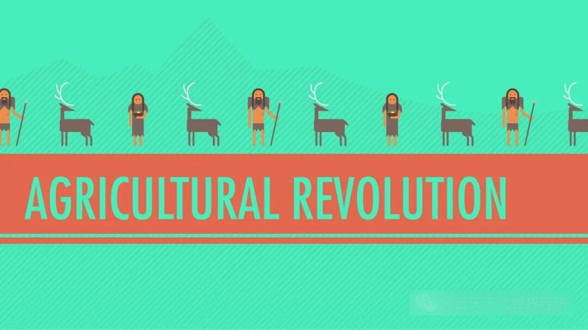
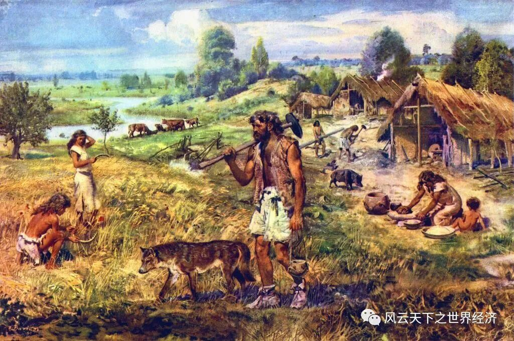
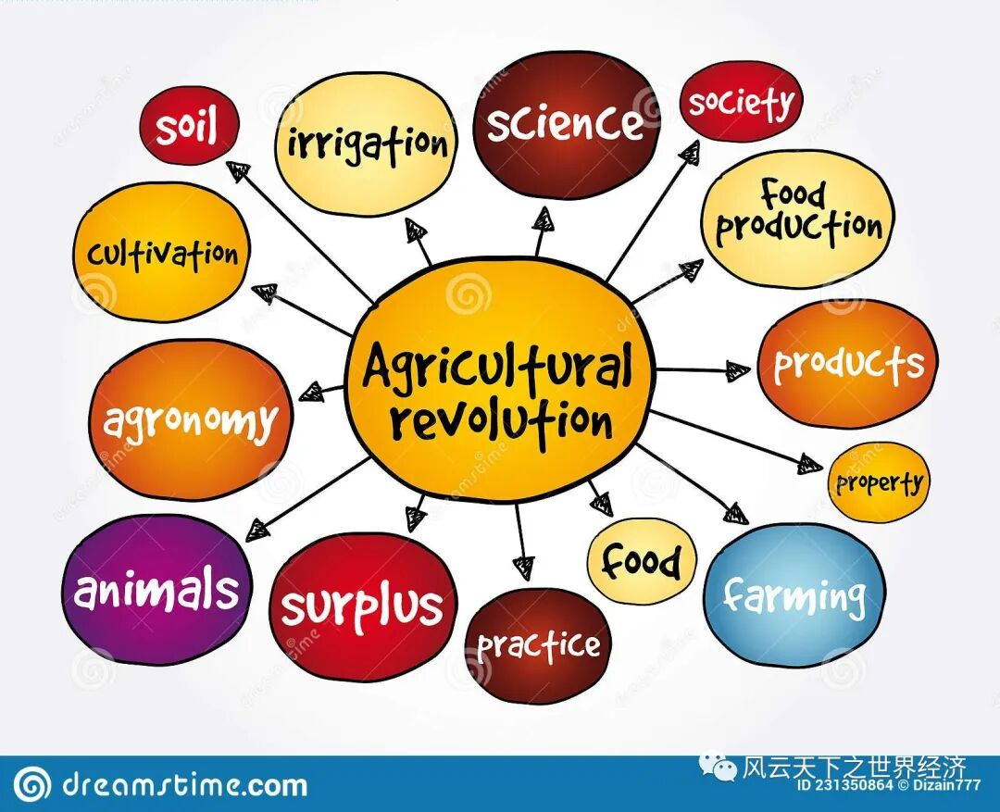

在21世纪的今天，每日徜徉在信息化、科技化海洋中的“后现代”人类似乎总是觉得农业社会是一个遥远的时代。可狂妄自大的文明缔造者必然要在宏远悠长的历史前低下他们骄傲的头颅，漫长的接近1万年的农业文明在长达300万年的“没有选择农业”的时代面前犹如蚍蜉与树。

农业革命
时间是衡量生命的刻度，可时间不是衡量增长、发展与进步的刻度。
“农业文明时代”作为蚍蜉是否撼动了300万年的大树呢？我们不能将“进入农业社会”的重要决定比喻成“打开潘多拉的魔盒”，我们同样也不能说农业文明是人类的“诺亚方舟”。
它是一种选择，但它并不是一个选择的过程。
如果采集狩猎的人类站在300万年和1万年的交界之处，他们按下了“continue”去延续这悠长的神话，那么之后的1万年，所谓的“智人”将会立于整个地球的何种位置呢？
人口：“被缚的”普罗米修斯
在人类的起源上，各大文明的神话传说各显神通。我们无从揣测生活于采集狩猎社会的人类如何设想自身的来源，对于他们而言，如何在密林棘丛中躲避野兽的袭击并获取足够的食物生存下来才是至关重要的事情。
在北美洲，以猎鹿为生的拉布拉多纳斯卡比人的人口密度只有每平方公里0.3人以下。维持采集社会基本生存需要的基础是极低水平的人口数量和人口密度。世代繁衍导致人口不断增加，人们不断迁徙，不断发现新的森林、土地，不断寻找新的资源。
假设终有一天，所有适宜居住之处都挤满了人，而资源却是有限的，那么我们古老的祖先便将面临着两种选择：发挥主观能动性种植粮食，和或被动或主动地减少人口。
“被缚的”普罗米修斯
采集狩猎时代居无定所的生活客观地造成人口死亡率居高不下，与此同时，作为采集主力军的妇女为了生存需要选择孕育较少的婴孩。在这道德伦理的荒原时代，杀婴之举自然不能成为“丧尽天良”之为——毕竟当时的人类并不一定认可“天”的力量。为了维持采集狩猎下的基本生存需要，人类或主观或客观地控制了自身人口的增长。虽然很难想象，但是可以在脑海中演绎，假设我们生活在延续的狩猎采集时代，步行十公里可能都不会遇见一个人。
古希腊神话中，普罗米修斯用粘土造人。如果没有进入农业社会，人类自动延缓或者说是停止了人口的不断增长，何尝不是另一种形式的“被缚”的普罗米修斯？
Life is like a box of chocolates
可能我们采集狩猎时代的祖先们并不相信所谓“天意”，但是事实上可能他们确实在“靠天吃饭”。不得不提及的是，在遥远的时间，采集者便已经掌握了部分植物特性，而狩猎者也对动物习性都已经具备了相对成熟的了解，这从哥贝克力遗迹所雕刻的图像可以大略揣测出。即便如此，我们能够掌握在一定的时间、在一定的地点或是在一定的条件下可以获得食物，却基本上无法抵御天灾的突袭。在进化论的角度思考，为了能够在突然的天灾之下生存，人类或许可以拥有更加健壮的身体，也许是更加有力量，就像生存于相对原始环境中的非洲人在肌肉力量和体格上都优越于长期食用精细化食品的亚洲人。

身处农业革命的人们以及最早驯化的动植物
人类的文明或许走向另一种现实可能，对自然的探索、发现自然的奥秘以应对风险和危机，而不是更加倾向于信奉神明。在永远不知道下一个巧克力是什么的时候，危机感或许使人类更加关注自我本身，而疏于道德的管制，更不必说法制的出现。
说到“关注自我本身”，人们只需要获得自己所需的食物即可，并不需要负担家庭或者是集体的需要，而在种类丰富同时易得的食物条件之下，社会分工仅仅是小范围的、小规模的。人们在被现在所普遍认可的“集体”中生活，但是却比农业社会更具有个体精神和个体存在。
当然，这一切只是一种猜测，一个从农业社会发展而来的“社会人”的猜测。而换一种思路而言，猎取动物所需的协作力量似乎是庞大的。假设人们猎取了一头野猪，那么如何进行食物的分配呢？不论是力量决定地位，还是指挥的智慧占据上风，不平等的食物分割依然会出现。那么不断演化下去，在人类自私的基因的驱使下，阶级依旧会出现。但由于地广人稀，广泛的统一的具有“国家”属性的概念可能很晚很晚很晚才会出现。
数量较多、平均人口较少的所谓“部落”将长期存在，并且不断更新迭代，所发生的冲突随着人口不断增加而不断增加。

农业革命的衍生物
离开还是不离开？这是一个问题
一个非常朴素的想法是，为了维持采集渔猎社会的基本生存秩序，人们或主观或客观地将维持人口基数在一定的水平。而这只是平均而言。那么在某一个时期，人口突然剧烈增长，放在我们祖先面前的首要选择将是什么呢？离开现在的土地，去寻找新的可以生活的地方是一个重要的选择。
那么，离开还是不离开，这是一个问题。
哈姆雷特之问：“生存还是毁灭，这是一个问题”也可以理解成为“离开还是不离开”这个问题背后的逻辑。我们只是假定有一小部分人作出了“离开”这样的选择，他们在无数次失败和无数次探索中来到山顶，再到山的另一面，从而开辟出道路；或许他们也跋涉到海岸线，探寻大海深度广度之后，建造了出海的航船和港口。
这是不是意味着“大航海时代”将会从农业社会的束缚中挣脱出来，提前一个难以想象的时间来到人类的时代？农耕文明落后的西欧带来了航海新时代和令世界震撼的地理大发现，而被农业滋养的东亚人却在数千年的时光里过着辛劳的农耕生活。
我们在二者之间建立一个简单的链接，如果人类延续采集狩猎时代，那么世界也许会提前很久很久很久便连在了一起。
在这种假象的基础之上，由于人们往来的频率不断增加，便于交流的语言率先出现，在一段时间后，文字也将被伟大的祖先缔造出，但区别于农业社会，传递文字的载体或许将由绢布、纸此类而变成某类更加坚实不易折损的新的物品——或许从渔猎所得的猎物上所演变出来。地球的物种多样，人们对于多样性的需求显然在不断上升，那么商品交换常有，货币自然而然便出现了。而生存驱使人们流动、迁徙，人们为获取更多的资源开始进行贸易，可能将迎来商业更加繁荣的一个时代。
这是一个流动的时代？
我们大胆设想，流动的人带来流通的货币和流动的贸易，然后便会出现流动的部落，继而又出现了流动城市。
自私的基因
弗洛伊德认为，人类由采集进入农业社会，就是由即时的满足变成延时的满足。“文明的本质是压抑”。
事实上，我们现代人、后现代人所携带的基因正是由远古时期的人类在无数次自然选择之后所遗留下来的，比如，自私的基因。进入农业社会是为了自私，那么延续采集社会必然也是因为自私的基因。农业社会给人类带来文明之下的精神创伤——那么采集狩猎的后现代时代也必然拥有类似的牺牲转移。
人类瞬间的即时满足意味着长时期的空虚，而稳定较少的人口也意味着较少的竞争。人类面临的竞争从人与人之间转向人与动物或者说是自然之间。空泛的日常生活转向的是另一种压抑，或者人类将“道德伦理”与“制度建构”视为无物，又或者进入无比辉煌灿烂的“快乐原则”的文明。
我对我的设想常常感受到悖论的存在。原因可能在于我被现有的习以为常的生活模式所桎梏，对于那些从未出现过的事物、模式有着本能的不认可和不相信。
进入农业社会是否是一个选择呢？它可能是一个选择，但并不是一个选择的过程。并不是在诸多比较之下，做出种种博弈和权衡，最终定下的方案，也不是一拍脑袋就已成定局。
也许它是一种牺牲，或者说是压抑，牺牲“享乐”，压抑人类接近其他动物的本能。
- END -